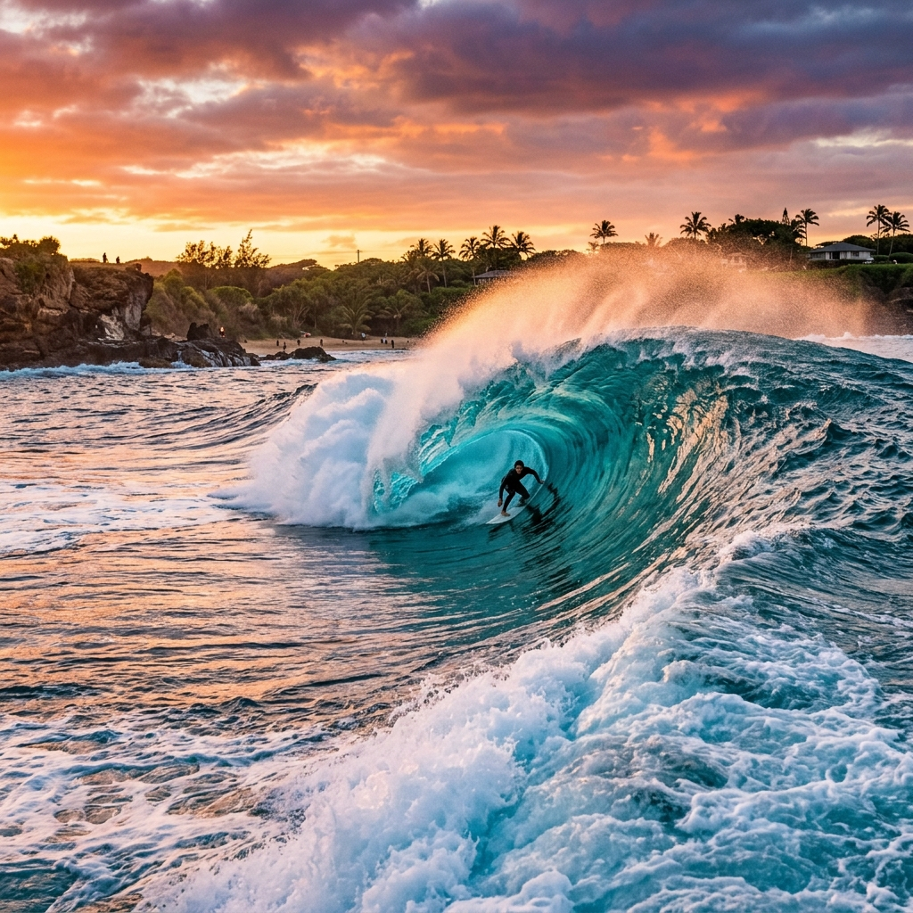

WSL Championship Tour
Reef Break
Pipeline
Oahu, HawaiiA rainha das ondas tubulares quebra sobre uma bancada vulcânica muito rasa. É um local extremo onde erros custam caro, mas a recompensa é o tubo mais famoso do surf mundial.